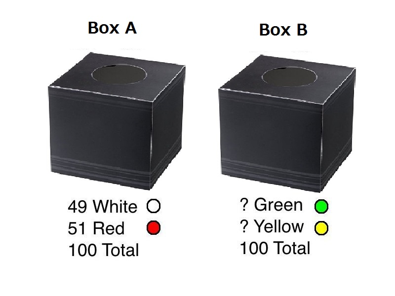
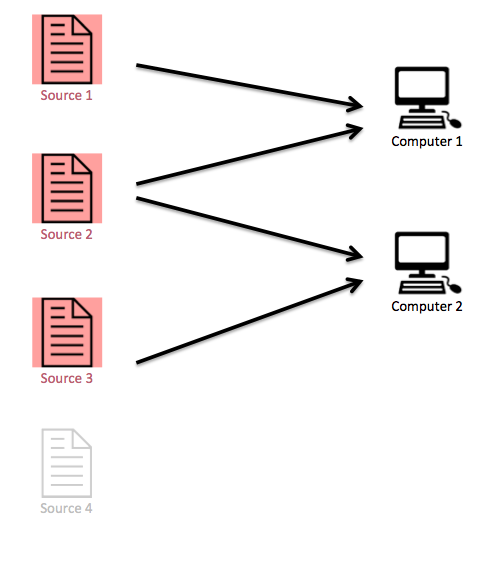

Laboratory
This page describes the past and ongoing experiments that I designed, programmed, and implemented. Code packages and instructions are available upon request.
Network formation


Introduction to treatment 1
Introduction to treatment 2
I study the impact of negative links through signed network formation. First, I propose a game-theoretical model to study how negative links reshape stable networks. I characterize the properties of pairwise stable and strong stable networks and discuss models' implications through two applications: the military alliance network and the school bullying network. I vary the relative gain of negative links and show that stable networks are assortative and agents tend to be homogenous when the gains are high; stable networks are more star-like when the gains are low. Second, I conduct a continuous-time online experiment to study the behavioral changes related to negative links. I find that subjects are more myopic and less farsighted when negative links are introduced. This is the first paper to both theoretically and behaviorally analyze the impact of negative links.
I study the impact of negative links through signed network formation. First, I propose a game-theoretical model to study how negative links reshape stable networks. I characterize the properties of pairwise stable and strong stable networks and discuss models' implications through two applications: the military alliance network and the school bullying network. I vary the relative gain of negative links and show that stable networks are assortative and agents tend to be homogenous when the gains are high; stable networks are more star-like when the gains are low. Second, I conduct a continuous-time online experiment to study the behavioral changes related to negative links. I find that subjects are more myopic and less farsighted when negative links are introduced. This is the first paper to both theoretically and behaviorally analyze the impact of negative links.
Is Ellsberg behavior evidence of ambiguity aversion?
with Chrsitoph Kuzmics and Brian W. Rogers [under review]
We design and implement lab experiments, as close as possible to the Ellsberg two- color urn experiment, to evaluate the positive and normative appeal of behavior arising from models of ambiguity-averse preferences. We report three main empirical findings: First, these preference models do not explain behavior any better than subjective expected utility. Second, subjects do not act on the basis of preferences alone, showing evidence that their behavior reflects an incomplete understanding of the problem. Third, additional clarification of the decision making environment pushes subjects’ choices in the direction of ambiguity aversion models, regardless of whether or not this is also consistent with subjective expected utility, supporting the position that subjects find such behavior normatively appealing.
Belief formation on networks: Experiments on precision and correlation neglect
with Brian W. Rogers [working paper]
We design and run experiments to study information processing through interconnected channels. We identify two distinct biases: correlation neglect and precision neglect, the latter of which is novel in the literature. Both biases are important determinants of behavior. While about half of our subjects provide some nearly rational estimates, the remaining behavior is highly erratic. We utilize two novel design features, and show that both of them dramatically change behavior, and result in a complete elimination of rational estimates. The first is feature is what we call unsolvability, in which posterior beliefs are nondegenerate. The second feature is requiring subjects to think about the problem abstractly, by providing a formula rather than an explicit answer.
Comments on correlation neglect
with Brian W. Rogers [under review]